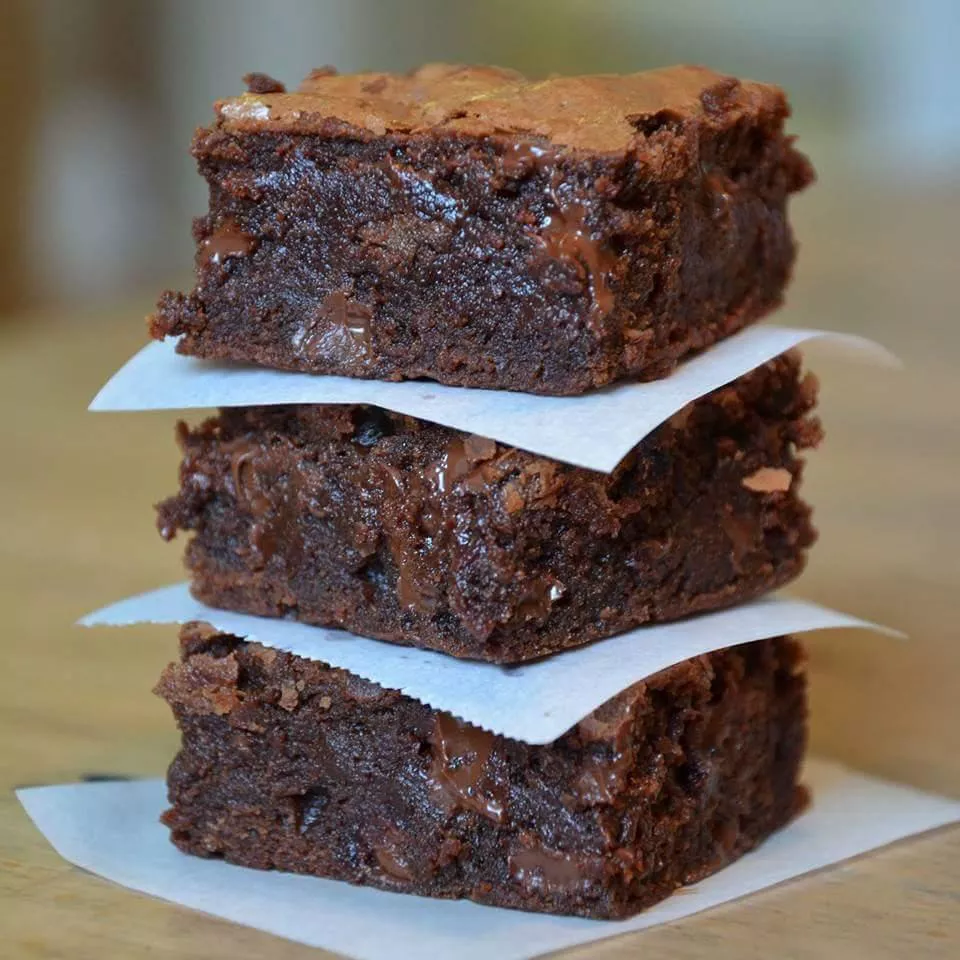

Brownies
This brownie recipe is simple, quick, and delicious
Ingredients
- 1 cup butter, melted
- 2 cups white sugar
- 1/2 cup cocoa powder
- 1 teaspoon vanilla extract
- 4 eggs
- 1 1/2 cups all-purpose flour
- 1/2 teaspoon baking powder
- 1/2 cup walnut halves
Preparation
- Preheat the oven to 350 degrees F (175 degrees C). Grease a 9x13-inch pan.
- Combine the melted butter, sugar, cocoa powder, vanilla, eggs, flour, baking powder, and salt. Spread the batter into the prepared pan. Decorate with walnut halves, if desired.
- Bake in preheated oven for 20 to 30 minutes or until a toothpick inserted in the center comes out with crumbs, not wet. Cool on wire rack.